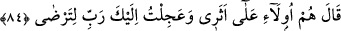

olmanın şevkiyle onlardan önce Tûr’a geldi ve onlara da peşi sıra gelmelerini emretti.
Nitekim Celâleyn’de böyle geçmektedir.
el-Arâis’te şöyle der: “Halkla beraber olmaktan Mûsâ (a.s.)’ın göğsü daralmıştı.
Hakk’a vâsıl olma günlerini düşündü. Hz. Mûsâ’nın acele etmesinin sebebi, bir an
evvel Allah ile mülâkî olma arzusudur.”
Kâşifî der ki: “Rivâyet edilir ki İsrâiloğulları Fir’avn’un helâkinden sonra Mûsâ
(a.s.)’dan ‘Bizim için bir şerîat kavâidi ve onun hükümlerini beyân et.’ diye taleb ettiler.
Mûsâ (a.s.) bu konuda Allâh’a münâcât etti. Ona: ‘İsrâiloğulları’nın ileri gelenlerinden
bir toplulukla Tur dağına gel ki sana şer‘î hükümleri kendisinde toplayan bir kitap
vereyim’ diye hitap ulaştı. Mûsâ (a.s.) Hârun (a.s.)’ı yerine bıraktı ve kavminin önde
gelenlerinden yetmiş kişiyle Tur’a doğru yöneldi. Kavmine kırk gün sonra döneceğini
ve bir kitap getireceğini vaadetti. Tur’un yakınına varınca o yetmiş kişiyi terk etti.
Hakk’ın kelâm ve irâdesini dinlemeye ziyâde iştiyâkından aceleyle Tur dağının tepesine
çıktı. Bunun üzerine “Seni acele ile kavminden ayrılmaya sevk eden nedir, ey Mûsâ?”
rabbânî hitabı ona ulaştı.”
Fakir (Bursevî) der ki: “Bu soru, “Sağ elindeki nedir, ey Mûsâ?” (Tâhâ, 20/17)
âyetinde de olduğu gibi Hz. Mûsâ’nın gönlünü ferahlatmak içindir. Müfessirlerin
çoğunun zannettikleri gibi red ve inkâr için olan bir soru değildir.
84. Mûsâ: “İşte onlar da benim peşimdeler. Ben, memnun olasın diye sana acele
ile geldim Rabbim.” dedi.
“Mûsâ: İşte, onlar da benim peşimdeler.” Arkamdan geliyorlar, bir sâate kadar
ulaşırlar. “Ben,” emrini yerine getirmekte acele etmemden ve sana verdiğim sözü
yerine getirmekte özen göstermemden “memnun olasın diye sana acele ile geldim
Rabbim.” dedi.”
Son iki âyette değişik mânâlara işâret vardır:
1- Hak yolunun yolcusu, Allâh’a olan yolculukta (seyr ilallah) gevşeklik
göstermemelidir. Allâh’ın rızâsının O’na yönelişte (seyr) acele etmekte olduğunu
bilmelidir. Dinde acele etmek övülmüştür. Nitekim Allah Teâlâ: “Rabb’inizden bir
bağışa koşun.” (Âl-i İmrân, 3/133) buyurmuştur. Burada asıl olan taleb etmektir.
Mesnevî’de der ki:
İster yavaş gitsin, ister hızlı,
Arayan nihayet aradığını bulur.
İki elini de talebden çekme.
Taleb, yolda en iyi bir kılavuzdur.